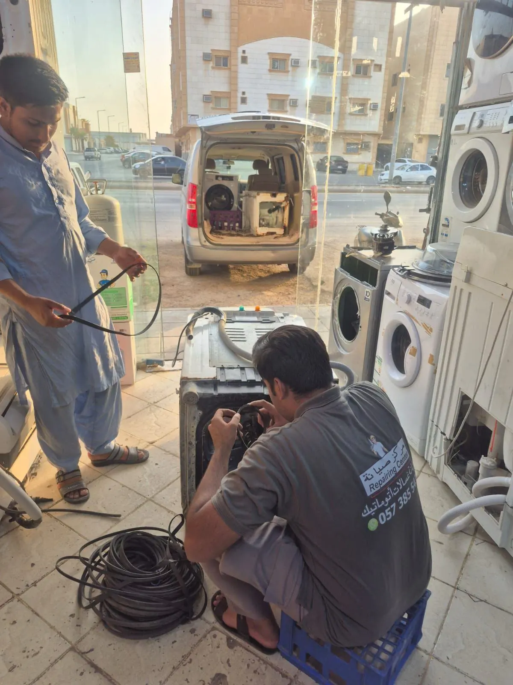

Washing Machine Repair in Al Yasmin, Riyadh
A machine that is ready for the technician makes the visit shorter for everyone. If you live in Al Yasmin in north Riyadh and your automatic washing machine has stopped working, this page lists what to do beforehand and what the visit includes.
Published by Automatic Washing Machine Repair · Last updated: November 2026
This page is part of our guide to Automatic Washing Machine Repair in Riyadh.

What should I do before the technician arrives?
Ten minutes of preparation saves time on site. None of it needs tools, and none of it involves opening the machine.
- Unplug the machine and close the water tap, especially if it is leaking or smells of burning.
- Take the clothes out if the door opens normally. If the door is locked, do not force it. Tell us instead.
- Clear the space around the machine so the technician can pull it out a little.
- Note what happens and when: while filling, washing, draining or spinning.
- Write down any message on the screen, or take a photo of it.
- Find the label with the brand and model, often inside the door frame or on the back, and photograph it.
- Dry the floor if water has leaked, so nobody slips.
- Make sure someone is home to open the door and to approve the work.
What does the repair visit include?
The visit follows the same order every time, and you decide at each step.
- Diagnosis: the technician checks the machine at your home and finds the fault.
- Explanation: you hear what is wrong in plain words and what the machine needs.
- Cost: you are told the cost before any work starts. Nothing begins until you agree.
- Repair and test: if you agree, the repair is done and the machine is tested.
- Warranty: parts and labor carry a 30-day warranty.
How is the cost explained?
After the diagnosis you hear three things in order: the fault, the work needed and the total. You can say no at that point. Our guide to repair costs in Riyadh explains what usually affects the total, and the article on repairing or replacing helps if your machine is old.
What does the 30-day warranty cover?
Parts and labor are covered for 30 days after the repair. If the same problem comes back in that time, message us and we will look at it. Save the date of the visit on your phone so it is easy to find.
What should I say in my first message?
Keep it short and plain. You do not need technical words.
- The brand, and the model if you can read it.
- What the machine does or does not do.
- Whether it is front-load or top-load.
- Your floor and flat number, and a WhatsApp location pin.
Is it worth repairing an older machine?
Sometimes yes and sometimes no. Because you hear the fault and the cost before any work starts, you can compare it with the price of a new machine and then decide. Age alone does not settle it. The fault, the parts needed and how the machine has served you matter more.
Do you visit Al Yasmin and the areas next to it?
Yes. We visit homes anywhere in Riyadh, and we are rated 4.8 on Google from 264 reviews. Our area guide pairs Al Yasmin with Al Narjis. The Al Narjis page shows how to tell a top-load machine from a front-load one, which is handy to know before you call.
Frequently Asked Questions
Only the safe basics: unplug it, close the tap, take out the load and look for a bent hose. Do not open electrical parts or force a locked door.
Someone should be there to let the technician in and to approve the cost. It can be a family member you trust.
Yes, please. A photo of the label and one of the screen or the leak often answer the first questions before we arrive.
Most repairs are done the same day you contact us. It depends on the fault and on whether the part is needed.
Book a visit in Al Yasmin
Tell us the brand, what the machine does and where you live. Call or WhatsApp us on +966 59 116 1916.